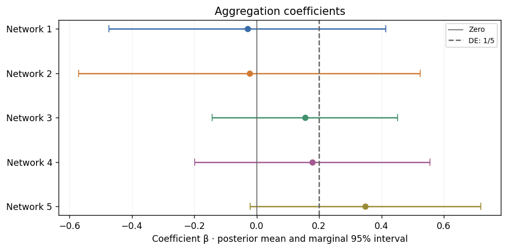
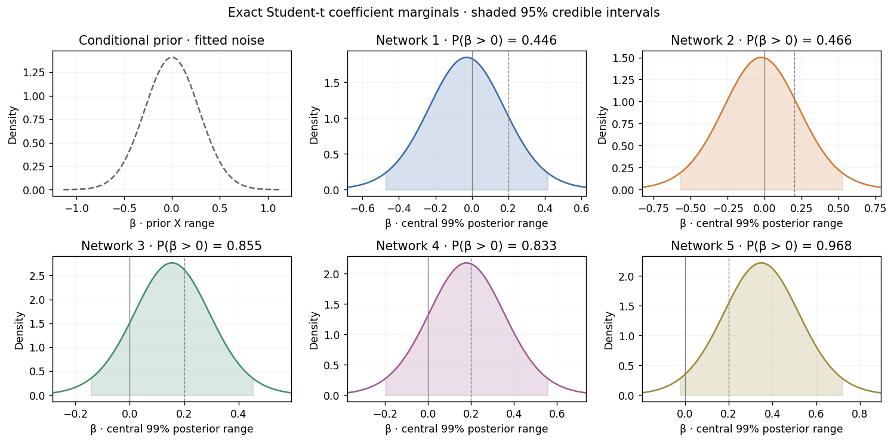
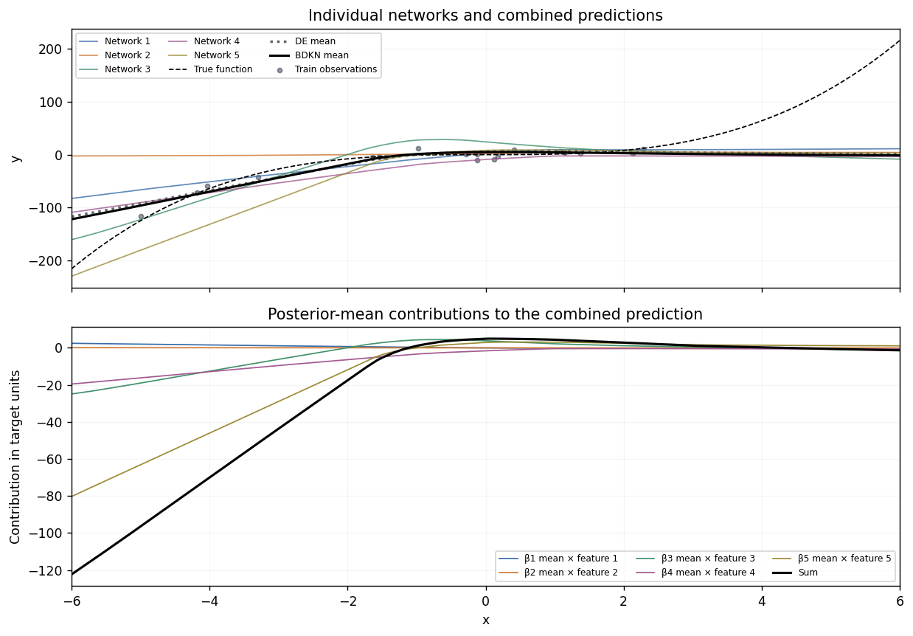
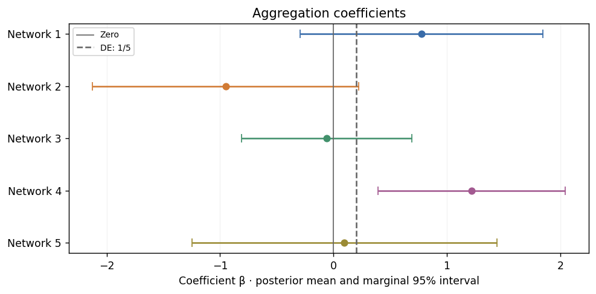
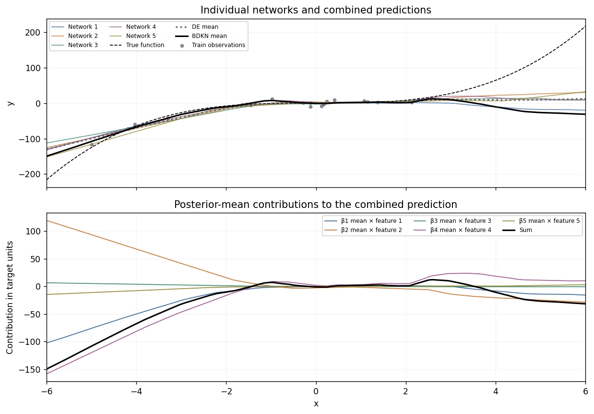
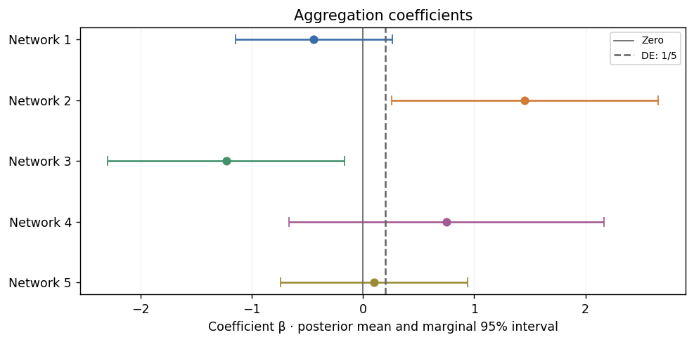
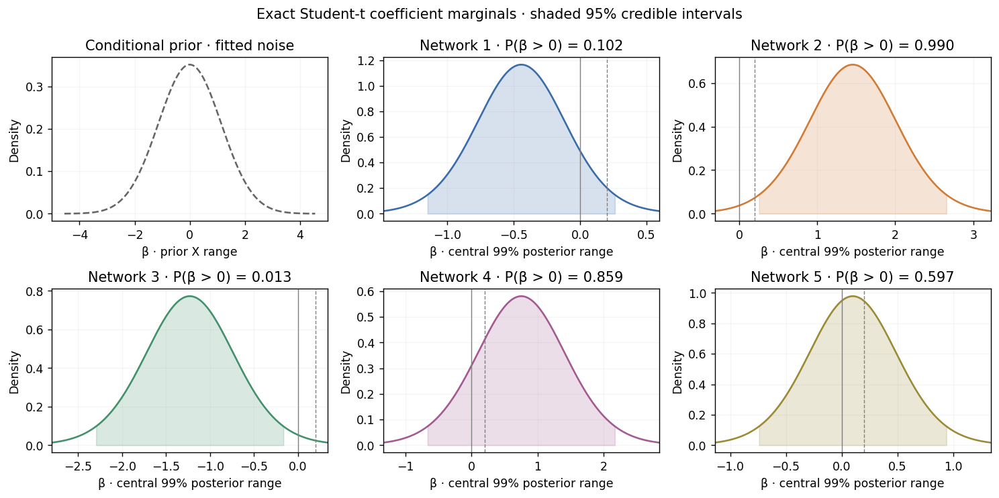
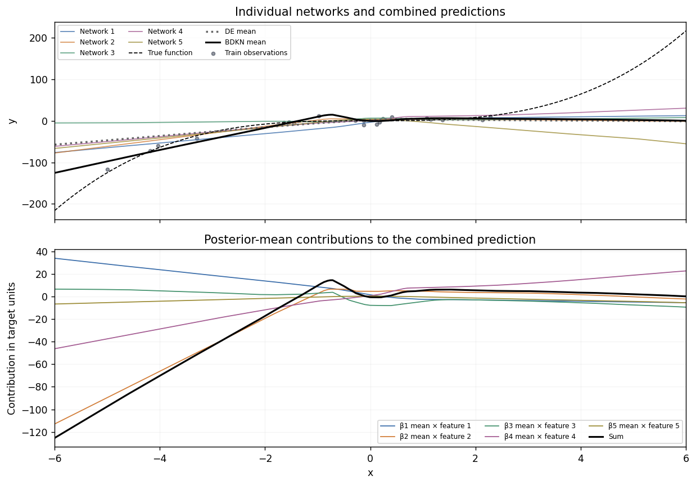

Regression comparison
Download resultsAggregation weights
Coefficients can be negative and need not sum to one. Intervals describe coefficient uncertainty; the dashed reference is DE’s fixed 1/H weight.
BDKN


Each density panel uses its own X range for readability; coefficient intervals above share a common axis. Prior reference conditions on fitted noise. Contribution shares use held-out inputs; test targets are used only for scoring.
| Network | β mean | 95% low | 95% high | P(β > 0) | Contribution share | Test RMSE | Test NLL |
|---|---|---|---|---|---|---|---|
| 1 | 1.64634 | 0.98409 | 2.30859 | 0.99998 | 0.48029 | 62.55445 | 11.62638 |
| 2 | 0.45083 | -0.98652 | 1.88817 | 0.73980 | 0.12782 | 62.95527 | 16.43550 |
| 3 | -0.38688 | -1.78622 | 1.01246 | 0.28528 | 0.12531 | 62.36362 | 10.38803 |
| 4 | 0.16634 | -0.64366 | 0.97633 | 0.66352 | 0.05730 | 60.95023 | 43.23640 |
| 5 | -0.67137 | -2.07639 | 0.73364 | 0.16539 | 0.20927 | 62.64652 | 21.54277 |
Functional repulsion · BDKN



Each density panel uses its own X range for readability; coefficient intervals above share a common axis. Prior reference conditions on fitted noise. Contribution shares use held-out inputs; test targets are used only for scoring.
| Network | β mean | 95% low | 95% high | P(β > 0) | Contribution share | Test RMSE | Test NLL |
|---|---|---|---|---|---|---|---|
| 1 | -0.02914 | -0.47298 | 0.41471 | 0.44622 | 0.02475 | 61.28487 | 11.80124 |
| 2 | -0.02243 | -0.56972 | 0.52486 | 0.46636 | 0.00229 | 78.81730 | 26.32820 |
| 3 | 0.15494 | -0.14260 | 0.45247 | 0.85485 | 0.18893 | 62.81198 | 8.47976 |
| 4 | 0.17903 | -0.19815 | 0.55621 | 0.83303 | 0.18611 | 65.04403 | 17.66482 |
| 5 | 0.34893 | -0.02109 | 0.71896 | 0.96840 | 0.59792 | 64.88492 | 15.83794 |
Weight repulsion · BDKN



Each density panel uses its own X range for readability; coefficient intervals above share a common axis. Prior reference conditions on fitted noise. Contribution shares use held-out inputs; test targets are used only for scoring.
| Network | β mean | 95% low | 95% high | P(β > 0) | Contribution share | Test RMSE | Test NLL |
|---|---|---|---|---|---|---|---|
| 1 | 0.77703 | -0.29329 | 1.84736 | 0.92721 | 0.22485 | 68.02159 | 13.29242 |
| 2 | -0.94992 | -2.12345 | 0.22362 | 0.05343 | 0.33710 | 50.54284 | 12.36845 |
| 3 | -0.05758 | -0.80860 | 0.69344 | 0.43727 | 0.01763 | 57.48468 | 8.39955 |
| 4 | 1.21935 | 0.39411 | 2.04458 | 0.99706 | 0.38641 | 56.54898 | 17.60861 |
| 5 | 0.09629 | -1.24644 | 1.43902 | 0.55871 | 0.03402 | 52.10053 | 13.51525 |
First-order repulsion · BDKN



Each density panel uses its own X range for readability; coefficient intervals above share a common axis. Prior reference conditions on fitted noise. Contribution shares use held-out inputs; test targets are used only for scoring.
| Network | β mean | 95% low | 95% high | P(β > 0) | Contribution share | Test RMSE | Test NLL |
|---|---|---|---|---|---|---|---|
| 1 | -0.44386 | -1.14922 | 0.26150 | 0.10209 | 0.18384 | 62.11280 | 10.47459 |
| 2 | 1.45531 | 0.25547 | 2.65516 | 0.99005 | 0.40260 | 66.22724 | 23.17125 |
| 3 | -1.23069 | -2.29421 | -0.16716 | 0.01275 | 0.08396 | 77.50330 | 10.95662 |
| 4 | 0.75113 | -0.66454 | 2.16679 | 0.85924 | 0.28327 | 59.05936 | 7.57731 |
| 5 | 0.09970 | -0.74025 | 0.93965 | 0.59652 | 0.04632 | 86.04489 | 20.72942 |